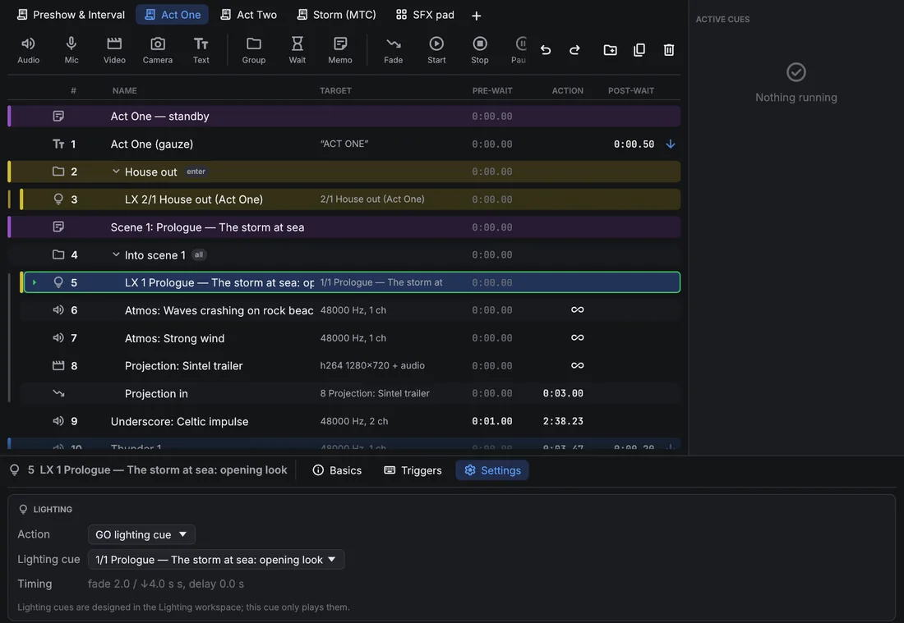
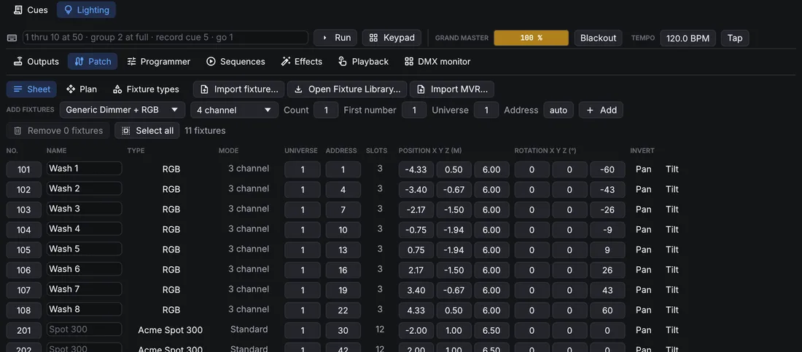
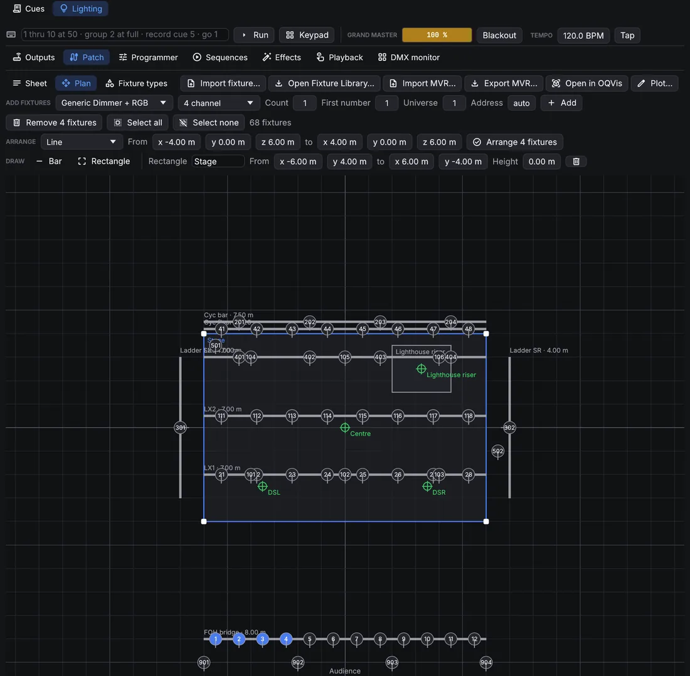
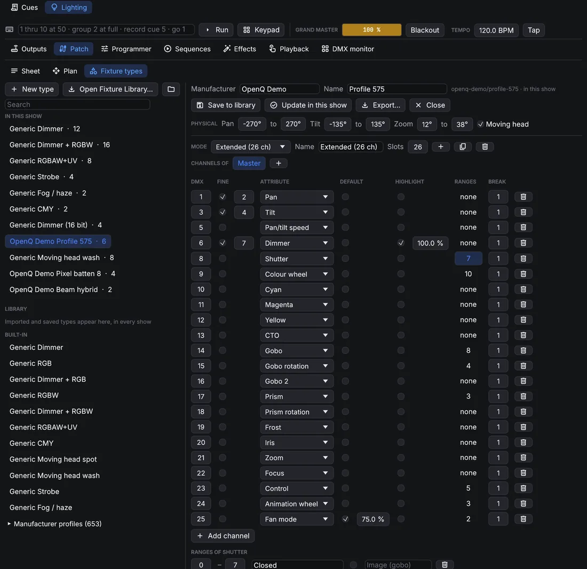
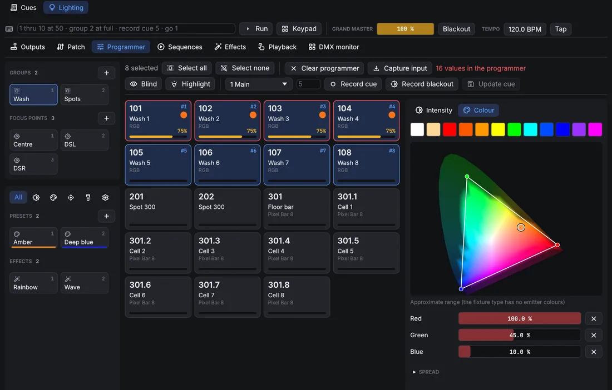
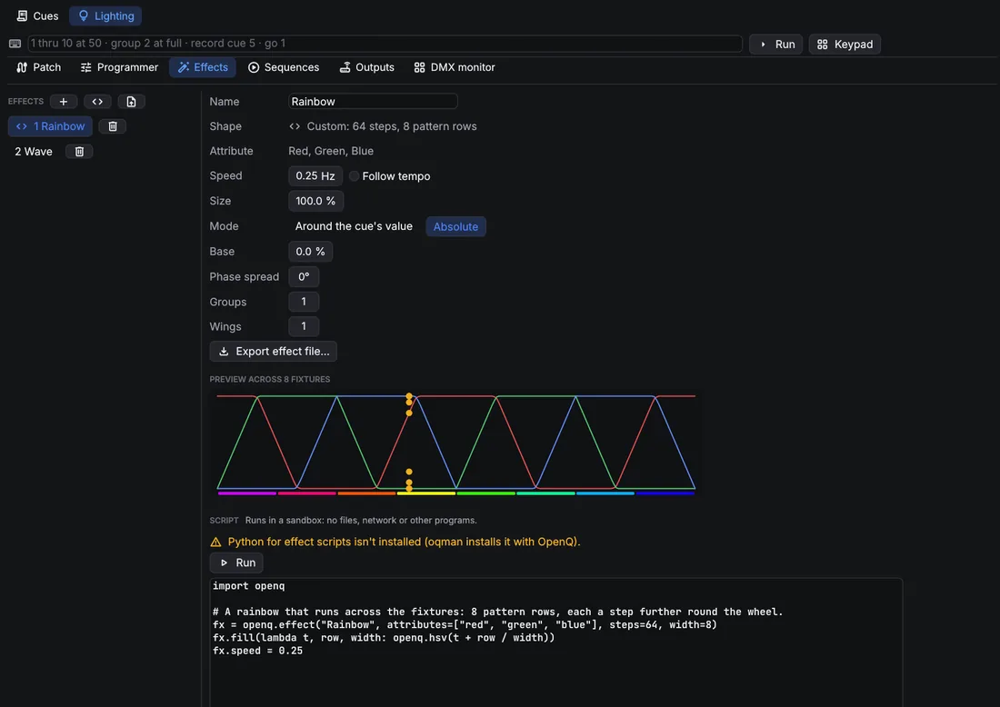
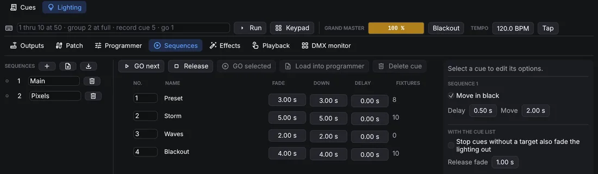
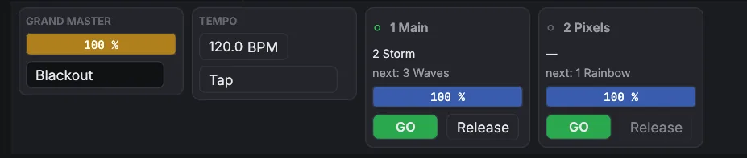
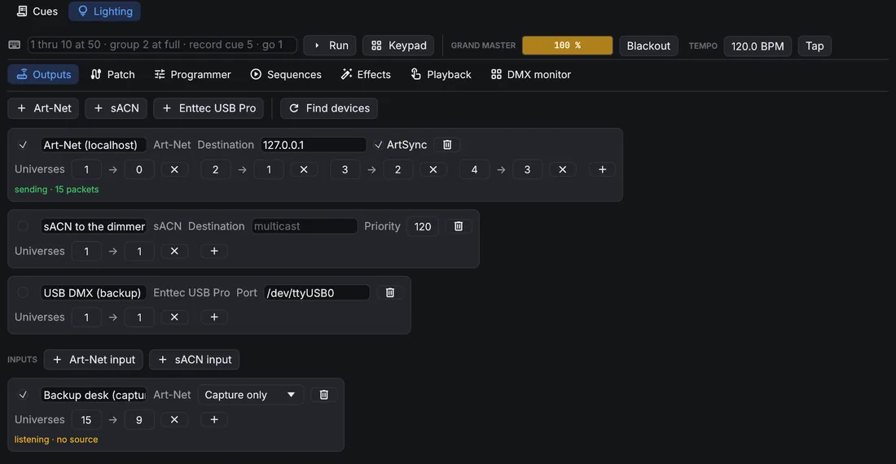
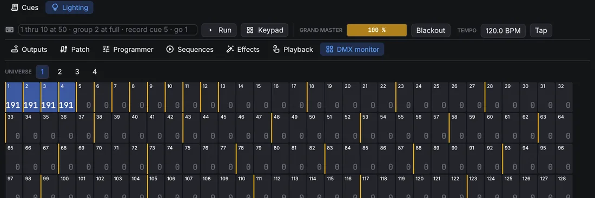

OpenQ User Manual
OpenQ runs a show from a list of cues. Each press of GO fires the next one: sound, video, text on a screen, fades, waits, or messages to other gear. This manual covers building a cue list, running it live, and controlling it from other devices.
OpenQ speaks English, Spanish and Galician. It asks for a language the first time it starts; change it any time in .
01Getting started
Installing
OpenQ is built on your own computer by its installer, oqman. The installer downloads the source code of the newest version, installs what the build needs (Rust, a C compiler, and FFmpeg for video), builds OpenQ and adds it to your applications. Your shows are never touched.
You need an internet connection, several gigabytes of free disk space, and an administrator password on Linux and Windows (it is used to install system packages). The first install is the longest, because the whole program is compiled; on an older computer it can take a long time. Later updates are quicker, because the dependencies are already built.
Linux
- Open a terminal, paste the command below and press Enter:
curl --proto '=https' --tlsv1.2 -fsSL https://github.com/iagonunez/oqman/releases/latest/download/install.sh | sh - The first step downloads the installer, checks it against the published checksum and puts it in
~/.local/bin. Then it starts. - When it lists the system packages it needs (a C compiler, libclang, the ALSA and PipeWire audio headers, udev and FFmpeg), it asks before installing them with your distribution's package manager. Answer yes; the package manager asks for your password.
- If the computer has no Rust, oqman installs a private copy in its own folder. Any Rust already on the system is left alone.
- The build prints each crate it compiles. Leave the terminal open until it says that OpenQ is installed.
- Open OpenQ from your applications menu (search for "OpenQ"), or type
openqin a terminal.
If the terminal says openq: command not found, ~/.local/bin is not in your PATH yet. Add it
once, then open a new terminal:
fish_add_path ~/.local/bin # fish
echo 'export PATH="$HOME/.local/bin:$PATH"' >> ~/.bashrc # bash (zsh: ~/.zshrc)macOS
- Open Terminal (press ⌘ Space and type "Terminal").
- Paste the command below and press Enter:
curl --proto '=https' --tlsv1.2 -fsSL https://github.com/iagonunez/oqman/releases/latest/download/install.sh | sh - If the Mac has no Apple Command Line Tools yet, macOS opens Apple's installer. Accept Apple's licence, let it finish, then run the same command again.
- oqman builds FFmpeg from its source code, which takes a while. On an Intel Mac it also builds NASM, the assembler FFmpeg uses.
- The app is placed at
~/Applications/OpenQ.app, the Applications folder in your home folder. Open it from the Finder (Go → Home → Applications) or with Spotlight. Because you built it on this Mac, macOS does not show the "unidentified developer" warning.
Windows
- Open PowerShell: press the Start key, type PowerShell and press Enter.
- Paste the command below and press Enter:
powershell -ExecutionPolicy Bypass -c "irm https://github.com/iagonunez/oqman/releases/latest/download/install.ps1 | iex" - If the computer has no Microsoft C++ Build Tools, their installer opens with the "Desktop development with C++" workload selected. Accept Microsoft's licence and let it finish; it is large and can take a while. oqman then carries on in the same window.
- oqman downloads FFmpeg (the shared LGPL build) and libclang from LLVM, then compiles OpenQ.
- When it is done, OpenQ is in the Start menu and listed under Settings → Apps → Installed apps.
If something goes wrong
oqman doctorshows what is installed and what the build still needs.- If the build stops, read the last lines it printed, fix the cause (usually a missing package or a cancelled installer) and run the command again. What already compiled is kept, so the second try is quicker.
Updating and removing
To get a newer version, run oqman update: it rebuilds OpenQ when a new version is released. To remove
OpenQ, run oqman uninstall; it asks first. Add --purge to remove oqman's Rust, dependencies and
build cache as well. On Windows you can also remove OpenQ from Settings → Apps → Installed apps. Your shows
are never touched.
To run a copy you are working on from source instead:
cargo run --release # start with an empty show
cargo run --release -- show.openq # open a saved showThis manual is built into OpenQ: choose or press F1 to open it in your web browser, in the language of the interface. It works without an internet connection and always matches your version of OpenQ.
Your first show
- Drag audio or video files from your file manager onto the window. Each file becomes a cue. You can also use .
- Add other cues from the toolbar above the cue list, or press Ctrl+1…0.
- Select a cue and set its options in the inspector at the bottom of the window.
- Click the first cue to put the playhead on it, then press Space (GO).
- Save with Ctrl+S. Shows are saved as
.openqfiles. Media paths are stored relative to the show file, so you can move the show folder as a whole.
Keep the show file in the same folder as its media. Then the folder can be copied to another computer and opened there unchanged.
02The main window

- Title bar: the show's name (a dot means unsaved changes). On Windows it also holds the minimise, maximise and close buttons: drag the bar to move the window, double-click it to maximise, and drag any window edge to resize.
- Menus: File, Edit, Cue, Show, Video (stages and outputs), Remote, View (geometry preview, engine log) and Help (this manual, the error log, about and licenses).
- GO fires the cue at the playhead. The standby card shows that cue, with its notes underneath so the operator can read them before pressing GO.
- Transport: pause all, resume all, stop all. Next to them, the output meters show each device channel in dB.
- Cue list tabs: one tab per cue list (see below).
- Cue list: number, name, target (file details or the target cue), pre-wait, action time, post-wait and the continue arrow. Running cues turn green, and their action column counts down. A red icon marks a missing file or target. Files are checked in the background every couple of seconds, so a slow network drive never freezes the window, and a drive plugged back in clears the icon on its own.
- Active cues: every running cue with elapsed and remaining time, plus its own pause and stop buttons.
- Inspector: the settings of the selected cue, in tabs. Each tab groups its settings in cards. It opens tall enough to show a whole tab; drag its top edge to resize it.
- Status bar: the Edit / Show switch at the left, then the audio device, video status, OSC, remote connections and messages. The button at the right opens Settings. A warning from the engine appears next to it for a few seconds and opens the engine log; messages on the left of the bar also fade out after a few seconds.
Working with the cue list
- Click a cue to select it and move the playhead to it. Use Ctrl-click to select several cues, Shift-click for a range, and ↑ ↓ to move the playhead.
- Drag cues to reorder them. Drop onto the middle of a group row to put cues inside it.
- Double-click a number, name, pre-wait or post-wait to edit it in place. Enter commits and Esc cancels.
- Click the continue column to cycle do not continue → auto-continue → auto-follow.
- Right-click a row for start, stop, duplicate, delete and more.
Cue lists
A show can have several cue lists, for example the main sequence and a list of sound effects to fire by hand. Each list has a tab above the toolbar; click a tab to bring that list forward. GO, the playhead and the standby card work on the list in front, and each list remembers where its playhead was.
- Click to add a list. Right-click the current list's tab to rename it (or double-click it), move it, set its timecode, or delete it.
- Cues keep playing when you switch lists, and Start, Stop, Fade and other cues can target cues in any list. In the target menu, cues from other lists show the list's name.
- Cue numbers are shared by all lists, so OSC and hotkeys reach cues in every list.
03Edit and show mode
Edit mode is for building the show: everything can be changed. Show mode is for running it. The list is locked, the toolbar and inspector are hidden, and rows get bigger so they are easy to read in a dark booth. GO, stop, pause, hotkeys and moving the playhead all work in both modes.
Switch with the switch at the left of the status bar, , or Ctrl+E.

Stopping
Esc or the red stop button fades everything out over the stop-all fade time (see Settings). Press it again during that fade to stop instantly.
Double-GO protection ignores a second GO that comes within a short time of the first, so a bounced key doesn't skip a cue.
04Cue types
Every cue has a number (free text, like 4.2), a name, notes,
a colour and an armed switch, all on the Basics tab. A disarmed cue is skipped by GO. Basics also
sets the cue's pre-wait, continue mode and post-wait, and, for audio
and video cues, the media file.
The Triggers tab holds the ways to fire a cue besides GO: a hotkey, a key that fires the cue directly whatever the playhead is on, and a timecode trigger.
05Timing and continues
Each cue has three times. The pre-wait runs between GO and the cue's action. The action is the cue itself: a sound playing, a fade running. The post-wait is counted from the start of the action and is used by auto-continue.
| Continue mode | What happens next |
|---|---|
| Do not continue | Nothing. The playhead moves to the next cue and waits for GO. |
| Auto-continue | The next cue fires when this cue's post-wait has run out. |
| Auto-follow | The next cue fires when this cue's action ends. |
Chained cues start on exact sample boundaries, so a sequence keeps its timing however long it runs.
Groups
| Group mode | Behaviour |
|---|---|
| Start first child and enter group | Fires the first cue inside the group and moves the playhead into it. |
| Start first child and go to next cue | A playlist: the children play one after another while the playhead moves on past the group. |
| Start all children simultaneously | Fires everything inside at once, each with its own pre-wait. |
| Start random child and go to next cue | Fires one child picked at random. |
Select cues and press Ctrl+G to group them. ← and → collapse and expand a group. Groups can hold other groups. Each level is inset with a guide line, so you can see where a group ends.
06Audio cues
Time & Loops

- Trim: drag the start and end markers, or type the times. Drag the waveform to pan, and use Ctrl+scroll to zoom. A line shows the playback position while the cue runs.
- Loops: set a play count, or loop until stopped.
- Playback: the rate is varispeed. The pitch changes with the speed, like a tape machine.
- Fades: a fade-in from silence when the cue starts and a fade-out to silence at its end, with a choice of curve, without a separate Fade cue. The fade-out needs a known end, so it doesn't happen while the cue loops forever; with a vamping slice it plays after the Devamp.
- Slices: double-click the waveform to add a slice marker. Drag it to move it, and right-click to
delete it. Each slice plays a set number of times, or loops until a Devamp cue (or the OSC
message
/cue/<n>/devamp) releases it. The current pass then finishes and playback carries on. Use this for music that has to vamp until an actor's line.
I/O

- Input: the media file, with its length, format, location on disk (and a button to show it in the file manager), size and channel count. Browse… replaces the file.
- Output: the audio device the cue plays on and its number of outputs (set in Settings → Audio).
- Routing: automatic, or a crosspoint matrix from the file's channels to the device outputs. Each crosspoint has its own level in dB, so a stereo file can feed eight speakers. Or switch to Object audio and place the channels in the room (below).
Object audio

Object audio routes sound by where it should come from instead of by output. Pick Object audio in the Routing card: every channel of the file becomes an object you drag around the room (or type its position). The speakers nearest an object play it loudest; the level falls 6 dB each time the distance doubles, and the total power stays the same wherever the object is, so moving it never changes its loudness. Spread widens an object from a point (0 %) to the whole room (100 %). Output faders on the Levels tab still apply, and Mic cues and video soundtracks can use object audio too.
The room is set once per show in Settings → Audio. A Fade cue can move the objects, for a sound that flies across the room. Moves are smoothed, so dragging an object on a playing cue doesn't click.
Levels

The Main fader sets the cue's level. Next to it there is a fader for each output of the audio device, which trims that output after the routing matrix. Drag a fader, or type a value in the box above it; double-click a fader to return it to 0 dB. Pan moves the sound between outputs 1 and 2 while the routing is automatic.
EQ

Band types are high-pass, low shelf, peak, high shelf and low-pass. EQ enabled turns the whole EQ on and off.
Audio FX

Audio, Mic and video cues have an Audio FX tab: a chain of up to eight effects that run top to bottom on the cue's channels, after the EQ and before routing. Add… puts a new effect at the end; the arrows change the order, On bypasses an effect without losing its settings.
| Effect | Settings | Use |
|---|---|---|
| Delay | time, feedback, high cut, mix | Echoes; the high cut darkens each repeat. |
| Reverb | size, damping, pre-delay, width, mix | Room sound for dry recordings or voices. |
| Compressor | threshold, ratio, attack, release, makeup | Evens out level; all channels move together. |
| Limiter | ceiling, release | Never lets a peak past the ceiling. |
| Gate | threshold, range, attack, hold, release | Turns a microphone down between phrases. |
| Distortion | drive, tone, output, mix | Radio, telephone or overdriven sounds. |
| Chorus | rate, depth, delay, feedback, mix | Thickens and widens a sound. |
| Bitcrusher | bits, downsample, mix | Lo-fi, retro game sounds. |
Level, output fader, pan, EQ, effect, routing and object changes are heard straight away on a playing cue, so you can tune them during a run. Reverb and delay tails carry on through an edit.
Mic cues

A Mic cue sends a live input (a microphone, a line input, a playback machine) through the OpenQ mixer, so it gets the same Levels faders, pan, EQ and routing as an audio cue, and Fade cues can fade it. On the I/O tab choose the input device and which of its channels to use, for example inputs 3–4 for a stereo pair. A duration of 0 keeps the input open until the cue is stopped, and the fade in brings it up from silence. The input reaches the outputs about 30 ms late, which is too little to hear as an echo in most rooms.
07Video and text cues
A video cue plays a movie (anything FFmpeg can play) or a still image: PNG, JPEG, WebP, GIF, TIFF, BMP or SVG. Stills show for a set time, or until stopped. An SVG is drawn at the size it will be shown, including the largest scale its geometry and animation reach, so logos and line art stay sharp. Time & Loops has start and end trims, loops and hold last frame. The Audio tab has the soundtrack's main and output faders, and I/O its file and routing; the soundtrack plays through the mixer like an audio cue.
Geometry
- Stage: which output the picture goes to. Without one, the first stage is used.
- Fit: Fit shows the whole picture (letterboxed), Fill covers the stage and trims the overflow, Stretch fills it exactly, and Native size uses the file's own pixels.
- Layer (higher draws on top) and opacity.
- Position, scale and rotation. Position is a percentage of the stage:
X 25%moves the picture a quarter of the stage to the right. Lock proportional to scale both axes together. - Crop: trims a percentage from the left, top, right and bottom. The rest of the picture stays where it was.

Geometry preview (, or Preview on the Geometry tab) draws the selected cue's stage with the picture in place, without opening a projector output. In edit mode, drag in the preview to move the picture, scroll to scale it, and double-click to centre it. For a Fade cue that changes geometry, the preview shows where the fade ends, with the starting position as a dashed outline.
Camera cues
A Camera cue shows a live camera (a webcam, a USB or HDMI capture card) as a layer on a stage, with the same Geometry tab as video: position, scale, rotation, crop, opacity and layer, and Fade cues can move and fade it. On the Camera tab pick the device and, if you need it, the capture size; Mirror flips the picture like a selfie view. Show for 0 keeps it on until stopped. The device and size are used the next time the cue starts.
Text cues
Text cues show typed text on a stage: titles, surtitles, captions, or a countdown for the crew. The Geometry and Animation tabs work as they do for video, and Fade cues can move and fade text. Changes on the Text tab appear at once on a cue that is showing.

| Setting | What it does |
|---|---|
| Font | Any font installed on the computer. Type in the list to search. Inter (built-in) is always available. |
| Weight · Italic | Thin (100) to Black (900). Weights the font doesn't include are greyed out, and the nearest installed one is used. |
| Size | Letter size in stage pixels: 96 px on a 1080-line stage is about a tenth of its height. |
| Line height · Spacing | Distance between lines (as a multiple of the size), and extra space between letters in em. |
| Colour · alignment | Text colour and transparency; left, centred or right lines. |
| Outline | An edge around every letter, in stage pixels, with its own colour. Keeps text readable over busy video. |
| Shadow | A soft drop shadow: colour, offset right and down, and blur. |
| Background | A box behind the text: colour and transparency, padding (space around the text, in stage pixels) and radius for rounded corners. Good for captions and surtitles over video. |
| Show for | Time on screen; 0 shows it until stopped. |
Text is laid out properly for every language. Pairs like AV are kerned, ligatures are used, and right-to-left scripts work. Characters the chosen font lacks, such as emoji or Chinese, are drawn with another installed font. Text is rendered at twice the stage resolution, so it stays sharp when it is scaled up and smooth when it is scaled down.
Text is prepared in the background before its GO, and again after you change how it looks, so starting or editing a text cue never holds up the show. Colour changes, moves and animations need no preparing at all. After a change to the text, font or size of a cue that is showing, the new version replaces the old one a moment later.
The show file stores the font's name, not the font itself. Install the same fonts on every computer that plays the show. If a font is missing, the Text tab says not installed here and a fallback font is used.
Animation
The Animation tab of video and text cues moves, scales, rotates, crops, fades and recolours the layer with keyframes. The animation starts when the cue starts and follows the cue's own clock: pausing the cue pauses it.

- Add track picks a property. Its first keyframe sits at the playhead and changes nothing, so you can then set the values you want.
- Timeline: click the ruler or a row to move the playhead. Click a keyframe to select it, and drag it sideways to change its time. Double-click a row to add a keyframe there.
- Keyframe card: the selected key's time, value and Then, which says how the value moves on to the next key: Hold (stays, then jumps), Linear, Ease in, Ease out, Ease in-out, or a Custom curve (a cubic Bézier, written like CSS: x1 y1 x2 y2). Key at playhead adds a key with the value the track has at the playhead.
- Length is one pass of the animation; 0 means it ends at the last keyframe. A dashed amber line marks it on the timeline. Repeat: Once holds the last values, Loop starts again, Ping-pong plays forwards, then backwards.
- Turn on Preview to see the layer in the geometry preview as it looks at the playhead. A dashed outline shows the cue's own position.
| Property | Value | How it combines with the cue |
|---|---|---|
| X · Y | % of the stage | Added to the Geometry tab's position. |
| Scale X · Scale Y | % | Multiplies the Geometry tab's scale: 200% doubles it. |
| Rotation | degrees | Added to the rotation. 360° is a full turn. |
| Crop left · top · right · bottom | % of the picture | Added to the crop. Animate it for wipes and reveals. |
| Opacity | % | Multiplies the cue's opacity. |
| Tint | colour | Multiplies the picture's colours. White leaves it alone. A tint can only darken or recolour: white turns into the tint colour, black stays black. |
| Text colour · Outline colour · Shadow colour · Background | colour (text only) | Replace the colours on the Text tab. |
Because the values are relative, a Fade cue or a change on the Geometry tab still moves or fades the whole animated layer. For example, an animation can bob a logo up and down while a Fade cue slides it across the stage.

Animations are worked out live while the stage draws: a few sums per layer, with the moving, scaling and colouring done by the graphics card. Nothing is rendered or decoded ahead of time, so animating a layer costs about the same as showing it still. Changes you make appear at once, even on a running cue, at any stage resolution. Blur and colour changes are video effects, which a Fade cue can animate.
Video FX

Video, camera and text cues have a Video FX tab, a stack of effects on the picture. Add, reorder and switch them like audio effects. They are drawn by the graphics card as the stage draws, so they cost almost nothing and change live, even on a running cue.

| Effect | Settings |
|---|---|
| Colour controls | Brightness, contrast, saturation (0 = black and white). |
| Exposure | Exposure in stops, gamma. |
| Hue | Turns every colour round the colour wheel. |
| Colourise | Monochrome in a colour of your choice. |
| Sepia · Invert | Amount. |
| Posterise | Number of levels per colour. |
| Threshold | Black and white cut at a brightness level. |
| Vignette | Darkens the edges: radius, softness, amount. |
| Blur · Pixellate · Sharpen | Radius or block size in the picture's own pixels. |
| Chroma key | Makes a colour transparent (green or blue screen on a camera cue): key colour, threshold, softness and spill, which takes the green cast off the edges that remain. |
Colour effects run top to bottom; Blur, Pixellate and Sharpen change how the picture is read, so they always act first. The effects are applied after the layer's tint and opacity, and work with every blend mode.
08Fades
A Fade cue changes another cue while it runs. Choose the target cue, the duration and the curve (linear, S-curve or logarithmic), then tick what to change:
- Level in dB, for audio and for video soundtracks.
- Opacity, for video and text.
- Geometry: position, scale, rotation and crop. This starts from the target's own geometry, so only the values you change will move.
- Video effects: the target's Video FX settings are copied into the fade when you tick it; change the values to fade to. An effect switched off here fades out, and effects the target doesn't have fade in from nothing. Take the target's effects copies them again after you change the target.
- Objects, for targets in object audio mode: the positions and spread to move the objects to, edited on the same room view.
Light cues can't be the target of a Fade cue: lighting fades with its own Light cues (see Lighting).
Tick Stop target for a fade-out: the target stops when the fade ends. Pausing a fade freezes it, and resuming it continues with the time that was left.
09Timecode
OpenQ can run a cue list from incoming SMPTE timecode, for a show locked to a video, a band's click track or a lighting desk. It reads LTC (timecode as an audio signal) on an audio input or MTC (MIDI Time Code) on a MIDI input, at 24, 25, 29.97 drop-frame or 30 fps.
Setting up a cue list
Right-click the cue list's tab and choose Timecode…. Choose what the list follows (LTC or MTC), the audio input and channel or the MIDI input it arrives on, and the frame rate. The window shows the timecode coming in, and while that list is in front the standby card shows it too. Each cue list follows its own source, so one list can follow the band's LTC while another is run by hand.
Timecode triggers

On a cue's Triggers tab, tick Fire at and type the time (hh:mm:ss:ff). When the list's timecode runs past that time the cue fires, whatever the playhead is on, and its continues run as usual. The tab shows what the list follows and what it is receiving; Set up… opens the list's timecode settings.
Only timecode running forward fires cues. When the source jumps (a locate or a rewind) or stops, nothing fires, and triggering picks up again from the new position, so rehearsing a section by rolling back the source is safe.
10Stages and projection
A stage is one video output, such as a projector or a screen. Add stages in . Each has a name and a canvas size in pixels.
Sending a stage to a display
In , or with the Output dropdown in Settings → Stages, choose Window or one of the connected displays. A stage set to a display opens fullscreen on that display, and it opens there again when the show is loaded. If a display isn't listed, use Refresh displays. In a stage window, double-click or press F11 to toggle fullscreen.
Mapping

Edit mapping shows a test pattern on the stage: a white canvas with a square grid, pixel rulers along every edge, circles, diagonals and a centre cross, all drawn through the mapping, plus four numbered corner pins. Drag the corners to fit the picture onto the screen (keystone correction), or hover a corner and nudge it with the arrow keys: one pixel at a time, or ten with Shift. Reset mapping puts the corners back.
11Lighting
OpenQ drives lighting over DMX. The lighting design (patch, groups, presets, effects and sequences of lighting cues) is kept apart from the cue list, in the Lighting workspace: switch between and Cues above the cue list. The design can only be changed in Edit mode. In Show mode the Lighting workspace shows the executors and the DMX monitor.
Light cues
A Light cue in the cue list plays the lighting design;
it holds no levels of its own. On its Settings tab choose the Action: GO lighting cue fires a lighting
cue of a sequence (shown as sequence/cue) with that cue's own fades, and Release fades one sequence, or
all of them, out over the given time. Light cues fire together with sound and video, so a lighting change can sit on the
same GO as an effect or a video.

A Stop cue aimed at a Light cue releases that cue's sequence. With Stop all also fades the lighting out (Sequences page), Stop all, Panic and Stop cues without a target release every sequence too, over the Release fade.
Lighting fades only through Light cues: a lighting cue fades with its own times, and the next lighting cue or a Release takes it on from there. Fade cues don't act on Light cues.
Patch
The Patch page has three views: Sheet, Plan and Fixture types. The sheet lists the fixtures. To add some (on the Sheet or the Plan), pick a fixture type and mode in Add fixtures, set how many, the first fixture number, the universe and the start address (auto takes the next free one), and click Add. Every cell of the sheet can be edited: name, type, mode, universe, address, position and rotation, and pan or tilt reversal. Overlapping addresses and duplicate numbers are flagged above the sheet.

Fixtures with several cells, such as LED bars, are controlled cell by cell too: cell 3 of fixture 101 is 101.3.
Plan shows the rig from above. Click to select (Ctrl adds), drag to move the selection, drag empty space to
pan and scroll to zoom. With fixtures selected, Arrange spreads them along a line, an arc or a grid.

To make the plan look like the real venue, draw on it: choose Bar or Rectangle next to Draw and drag on the plan. Bars are pipes, trusses or booms, with a trim height; rectangles are the stage, risers or set pieces. Click a bar, or the outline of a rectangle, to select it: drag it to move it, drag its white handles to change its ends or corners, and set its name, exact coordinates and height in the row above. Delete over the plan removes it. With fixtures and a bar selected, Hang spreads the fixtures evenly along the bar at its height. Drag the label of a bar or a rectangle to move it out of the way; the plot puts it there too, and in the row above puts it back.
Fixture types
OpenQ comes with generic types (dimmer, RGB, RGBW, CMY, moving heads, strobe, fog). Import fixture… (on the
Sheet and the Plan) reads
Open Fixture Library (.json), GDTF (.gdtf), QLC+ (.qxf) and OpenQ
(.oqfixture) files. Imported types are copied into the show and saved in your fixture library, so they are there
for the next show. Fixture types opens the editor: channels and their attributes, 16-bit fine channels, defaults,
the value used by Highlight, and ranges: the named parts of a channel, such as the slots of a colour wheel or
a gobo wheel. GDTF files also bring the colours of the fixture's LEDs, which the colour picker uses.

On the Plan view, Export MVR… saves the patch with positions as an MVR file, which visualisers and other desks can import. Export plot… saves the Plan view as a PDF (one A3 sheet, at the largest standard scale that fits, such as 1:50) or an SVG drawing — pick the type in the save dialog — with the bars and rectangles, fixture numbers, addresses and a legend. Labels never cover each other: where fixtures are close together, their labels move apart.
Programmer
Select fixtures on their tiles: a click adds a fixture to the selection (a second click takes it out), dragging across tiles adds all of them, and a right-click selects only that fixture. Groups and the command line select too. The panel on the right sets their values, one page per feature: Intensity, Colour, Position (drag the pad to aim), Beam and Control. Drag a bar to set a value, or scroll over it for 1 % steps. Channels with ranges have a button per range, such as each gobo.
The colour picker shows every colour you can see, and brightens the ones the selected fixture can make: the shape between its LED colours. Colours outside it are dimmed, and a click there takes the nearest colour it can make. Each fixture mixes the colour with its own LEDs. The LED colours come from the fixture type (GDTF files have them); without them OpenQ uses typical LED colours, and says so under the picker.

Programmer values override the playback while they are set, and they are what Record cue stores. Clear programmer lets playback take over again.
- The column on the left holds the groups, presets and effects as cards. The buttons at its top show only the presets and effects of one feature (intensity, colour, position, beam, control).
- Groups: stores the selection as a group; click a group to select it (Ctrl adds); right-click it to overwrite or delete it.
- Presets: stores the selected fixtures' values as a preset: all attributes, or only the feature the filter shows. Clicking a preset applies it. Cues keep a link to the preset, so changing the preset changes every cue that uses it.
- Spread sets a value fanned across the selection, for example from 0 to 100 %, optionally from the centre out.
- Blind programs without changing the output. Highlight puts the selected fixtures at open white and full (not recorded); the arrow steps through them one by one.
- Capture input takes what the DMX inputs receive into the programmer, so a look built on another desk can be recorded here.
Command line and keypad
The command line above the pages takes desk-style commands; Keypad opens on-screen keys for a touch screen
(Clear line empties the command line).
Keywords can be shortened to two letters (th, gr, rec).
| Command | Does |
|---|---|
1 thru 10 at 50 | Selects fixtures 1 to 10 at 50 % intensity. > also means thru, @ means at. |
101.1 thru 101.12 at 80 | Cells 1 to 12 of fixture 101. |
group 2 + 7 - 3 at full | Group 2, plus fixture 7, minus fixture 3, at full. out is 0. |
1 thru 4 preset 3 | Applies preset 3. |
effect 2 | Runs effect 2 on the selection. |
gobo star, wheel 3 | Picks a range by name (the start is enough) or number. |
record cue 5 / 2 | Records the programmer as cue 5 of sequence 2. Also record group 4, record preset 6. |
update, clear, blind, highlight | Same as the buttons. |
go 2, go cue 5 / 2, release 2 | Plays sequences. |
delete cue 5 / 2 | Deletes a cue, a group or a preset. |
Effects
An effect moves one attribute of a set of fixtures with a waveform: sine, triangle, square, ramps, random, or a circle for pan and tilt. Speed is in Hz, or per beat with Follow tempo. Size and Base set the swing; it runs around the cue's value or, with Absolute, around the base. Phase spread staggers the fixtures, Groups moves several fixtures together and Wings mirrors the pattern. The preview shows the result across the fixtures.

Run an effect from the programmer (the effects pool, or effect 2), then record it into a cue. It keeps running
through the following cues until a cue stops it.
Script effects are written in Python with the openq module, for patterns the waveforms
can't make. Scripts only make effects: they run in a sandbox with no access to files, the network or other programs, and
they never run during the show, only the effect they made does. The Python they need is installed by oqman. Effects can be
shared as .oqfx files (Export effect file…, and the import button on the pool).
Sequences
A sequence is a cue stack. Lighting cues track: a cue stores only what changes, and everything else carries on from the cues before it. Each cue has a fade, a separate down fade for intensity going down, and a delay.

- Timing per feature gives colour, position or beam their own fade and delay.
- Cue only: the cue's changes don't track; the next cue goes back to what was there before.
- Block stores every tracked value in the cue, so edits to earlier cues no longer change it. A blocked cue shows a lock in the list and the button reads Blocked; press it again to let those values track again.
- Move in black (per sequence): fixtures that are dark take their next cue's position, colour and beam before they come up, after the set delay.
- Load into programmer brings a cue back for editing; Update cue on the Programmer page stores the changes.
Executors
The executor bar at the bottom of the Lighting workspace is there in both modes. It has the grand master, blackout, the effects tempo (type it or tap it) and one executor per sequence: its current and next cue, a level fader, GO and Release.

Control surfaces
A MIDI controller or an OSC app (TouchOSC, for example) can run the executors. In choose this computer's MIDI input, then add mappings: click Learn new (or the control of a mapping) and move a fader or press a button, then pick what it does. Executor bank adds faders on CC 1–8 and buttons on notes 36–43 in one go. Executors are numbered by their place in the sequence list.
- Faders: executor level, grand master.
- Buttons: executor GO, release and flash (full while held), blackout, release all, tap tempo, and the cue list's GO and Stop all. A button acts once per press, whether it sends notes, CC 127/0 or OSC 1/0.
The mappings are saved with the show; the MIDI input belongs to the computer, so a remote device can use its own
controller (its moves go to the main device). OSC mappings come in through the OSC listener, which also
knows the /light/… addresses without any mapping.
Outputs and inputs
On the Outputs page add where the DMX goes: Art-Net (a node's address, or broadcast; Find devices lists the nodes on the network), sACN (multicast, or a unicast address, with a priority) or an Enttec DMX USB Pro (or compatible) interface. Each output sends a list of universes: the patch's universe on the left, the number on the wire on the right (Art-Net counts from 0). Every output runs on its own, so a slow or unplugged device doesn't hold up the others, and a lost device is reopened by itself.

Inputs receive Art-Net or sACN from another desk. Each one either merges with OpenQ's output (the highest value wins), replaces it on the universes it receives, or is kept for capture only. When several desks send the same sACN universe, the highest priority wins. OpenQ ignores its own packets, so a broadcast output doesn't come back in through an input.
An Art-Net output can send ArtSync after every frame, so nodes that support it change all their universes at the same moment. Shift-click a node in the Nodes list to send it the universes it outputs; a warning shows when the output sends a universe the chosen node doesn't have. An Art-Net input answers desks that look for nodes (ArtPoll), so desks that only send to nodes they found send to OpenQ too.
DMX monitor
The DMX monitor shows every slot of a universe as it goes out, inputs included. A yellow line marks where each fixture starts.

Remote devices and visualisers
A remote device gets the lighting design and its changes, and shows the main device's executors and DMX output; its GO and faders act on the main device. A device with the edit role can change the design too. A visualiser can follow OpenQ the same way, or read the DMX from Art-Net or sACN and the rig from an MVR export.
12Remote devices
A second computer running OpenQ on the same network can follow the show and run it. This could be the stage manager's laptop or a tablet at the tech table. The computer running the show is the main device, and it does all the playback. The other device shows its cue list, playhead, running cues and meters, and sends GO and other commands to it.
Pairing a device
- On the main device, open , tick
Let paired devices connect, and click Pair a new device…. A code such as
C9XR-E9HJappears. - On the other device, open , click Search and choose the main device. If the search finds nothing, type its address, which is shown in the main device's Remote window.
- Enter the code and click Connect. After the first time, connecting needs no code.

Roles
| Role | The device can |
|---|---|
| View only | Follow the show: cue list, playhead, running cues and meters. |
| Control | Also press GO, stop, pause and resume, move the playhead, and start or stop single cues. |
| Control & edit | Also edit the show. Changes are saved on the main device. |
Set the role new devices get, and change any device's role, in the main device's Remote window. Changes take effect at once. Remove disconnects a device straight away, and it has to pair again to reconnect. When a device disconnects, it gets its own show back. Media files stay on the main device, so add them there.
Connections are encrypted and authenticated. A pairing code works for 5 minutes and 5 tries, and someone who records the network traffic still can't work it out from the recording. After pairing, each device logs in with its own secret key. An address that keeps failing is blocked for 5 minutes. The Activity list shows connections and rejected attempts.
Remote access uses TCP port 53200, and
the search uses UDP port 53201. A firewall on the main device has to allow both. On guest Wi-Fi the
search may find nothing; typing the address still works.
13OSC and network cues
Turn on OSC remote control in . It listens on UDP port 53000 by default. Cues are addressed by their number.
| Address | Action |
|---|---|
/go | GO |
/stop · /panic | Stop all with the fade · stop all instantly |
/pause · /resume | Pause all · resume all |
/playhead/next · /playhead/previous | Move the playhead |
/playhead/4.2 | Put the playhead on cue 4.2 |
/cue/4.2/start | Also stop, pause, resume, devamp |
/light/executor/2/level 0.5 | Executor 2's level; also go, release, flash (1 = press, 0 = let go). /light/grandmaster 0.8, /light/blackout, /light/release, /light/tap |
A Network cue sends one OSC message to other gear. Set the host, port, address
(for example /eos/cue/12/fire) and arguments. Arguments are separated by spaces: numbers are sent as
numbers, and text in quotes is sent as text.
14Settings
, or the button at the right of the status bar. These are saved with the show, except the language and the control surface MIDI input, which belong to the computer.
| Tab | Settings |
|---|---|
| General | Interface language (English, Spanish or Galician; changes at once), stop-all fade time, double-GO protection, master volume, OSC on/off and port. |
| Audio | Output device. Changing it stops all playback. Routing matrices address this device's outputs. The room for object audio: the speakers, where they stand and which output each one is on. |
| Stages | Add and name stages, canvas size, output display, fullscreen, mapping. |
| Control surfaces | This computer's MIDI input and the show's control surface mappings, with learn. |

Until you change it, the room follows the output device: a stereo pair, quad, 5.1 or 7.1 (with no speaker on the LFE output), or a ring for other channel counts. The presets set those up, and Use default goes back to following the device. Front, where the stage is, is at the top. Several speakers can share an output.
Remote access settings and device keys belong to the computer, not the show. They live in
~/.config/openq/remote.json, readable only by your user account.
15Crash safety
A show has to carry on when something goes wrong. OpenQ keeps problems as small as it can and gets your work back if it does go down.
Autosave and recovery
While a show has unsaved changes, OpenQ keeps a copy of it every few seconds. Saving the show, or quitting normally, removes the copy. If OpenQ or the computer goes down, the next start offers the copy back:

- Recover opens the copy with unsaved changes. Save it to keep them (it saves to the show's own file).
- Discard deletes the copy for good.
- Later closes the window; it asks again next time.
Saving a show writes a temporary file first and swaps it in once it is safely on disk, so a crash or power cut during a save leaves the previous version intact.
When something fails during a show
| What happens | What OpenQ does |
|---|---|
| The audio device disappears (unplugged, audio server restarted) | Its sounds stop and the status bar shows audio lost · reconnecting…. OpenQ tries to open the same device again every 2 seconds and carries on as soon as it is back. Video and other cues keep running. |
| A media file is damaged | That cue ends with an error in ; every other cue plays on. |
| An internal error in the cue engine | All cues stop at once, the playhead stays where it was and the log explains what happened. The next GO works as usual. |
| A cue starts itself in a loop with no time in it (a Start cue aimed at itself, or two aimed at each other) | It is held off and the log names the cue, instead of slowing the whole show down. |
| More than 256 sounds at once | Further audio cues are refused with an error in the log. |
Autosaves and crash reports live in the OpenQ settings folder: ~/.config/openq on Linux,
~/Library/Application Support/OpenQ on macOS, %APPDATA%\OpenQ on Windows, in
recovery and crash. A crash report holds what went wrong and where; please
attach it when you report a problem.
Error log. Every warning and error (engine log entries, device failures, failed saves or
opens, crashes) is also written, with the date and time in UTC, to logs/openq.log in the same
folder, so you can look back after the show. opens it. When it grows
past 2 MB it is moved to openq.old.log the next time OpenQ starts.
16Keyboard shortcuts
| Keys | Action |
|---|---|
| Space | GO |
| Esc | Stop all (fade); press again to stop instantly. Also cancels an edit in a row. |
| P / R | Pause all / resume all |
| ↑ ↓ | Move the playhead |
| ← → | Collapse / expand a group |
| Ctrl+E | Switch edit / show mode |
| Enter | Rename the selected cue in place |
| Ctrl+1 … 0 | New Audio, Video, Group, Wait, Memo, Fade, Start, Stop, Pause, Go To cue |
| Ctrl+D · Ctrl+G · Del | Duplicate · group selection · delete |
| Ctrl+Z · Ctrl+Shift+Z | Undo · redo (up to 200 steps; very large shows keep fewer, at least 10, to save memory) |
| Ctrl+N / O / S / Shift+S | New / open / save / save as |
| F1 | Open this user manual |
| F11 | Fullscreen, in a stage window |
| ← → ↑ ↓ (+Shift) | Nudge the hovered corner pin 1 (10) pixels while mapping |
| Cue hotkey | Fires that cue directly (set on the Triggers tab) |
17Troubleshooting
| Problem | Try |
|---|---|
| No sound | Check the status bar. If it says no audio, pick another device in Settings → Audio. Check the master volume and the cue's level and routing. |
| A Mic cue is silent | Check the input device and channels on its I/O tab; the level bar shows whether anything arrives. On macOS and Windows, OpenQ needs permission to use the microphone. |
| Timecode triggers don't fire | Open the list's Timecode… window and check that it receives timecode at the right rate. Cues only fire while timecode runs forward through their trigger time. |
| A Camera cue shows nothing | Check the device on its Camera tab (use to look again) and the engine log. Another program using the camera can block it. |
| A cue shows a red icon | Its media file is missing or unreadable, or its target cue was deleted. If the file has moved, click Browse… on the cue's Basics tab to find it again. After reconnecting a drive, give it about two seconds to clear. |
| A video doesn't appear | Open the stage window from the Video menu. Check the cue's stage, opacity and layer, and look in for decoder errors. A graphics card can only show pictures up to a certain size (often 8192 or 16384 pixels across). OpenQ shrinks still images, SVGs and text to fit, but a larger movie is left out: convert it to a smaller size. |
| The status bar says audio lost · reconnecting… | The audio device went away. Plug it back in or restart the audio service; OpenQ reconnects by itself. To use another device instead, pick it in Settings → Audio. |
| OpenQ asks to recover unsaved work | It didn't quit normally last time. See Crash safety. |
| GO seems to do nothing | The cue at the playhead may be disarmed, or the second press may have come within double-GO protection. |
| A remote device can't find the main device | Make sure remote access is on and both are on the same network, then type the address shown on the main device. |
| "Pair this device again" (remote) | The device was removed on the main device, or its key was forgotten. Open pairing on the main device and enter the new code. |
| Something fails and you don't know why | Open : every warning, error and crash is there with its time. |
18License and credits
OpenQ is licensed under the Apache License 2.0.
| You may | You must |
|---|---|
| Use OpenQ for anything, commercial included: run paid shows, concerts, tours, events and installations, and be paid to program or operate them. | Keep the copyright notice, LICENSE.md and NOTICE.md with every copy. |
| Copy, change and share it. | Say in the files you change that they were changed. |
| Sell copies, changed versions or services built on it. | Not use the OpenQ name as a trademark: the license gives no right to it. |
Copyright 2026 Iago Núñez — OpenQ (https://github.com/iagonunez/OpenQ) shows the version, the license and every third-party
notice. These are the fonts (Inter, JetBrains Mono and Barlow Condensed under the SIL Open Font License; Material Symbols
under Apache 2.0; the fonts built into egui) and the open-source Rust libraries OpenQ is built from, each under its
own license. The same texts are in NOTICE.md and THIRD_PARTY_LICENSES.md next to the program.
OpenQ plays video with the FFmpeg libraries. On Windows and
macOS the installer puts a build without GPL parts inside OpenQ, with its license in the Licenses folder;
on Linux OpenQ uses the system's FFmpeg. FFmpeg has its own license. If you pass a built OpenQ on to others, use an
FFmpeg without GPL parts, or the GPL 3 covers the whole program. See NOTICE.md.